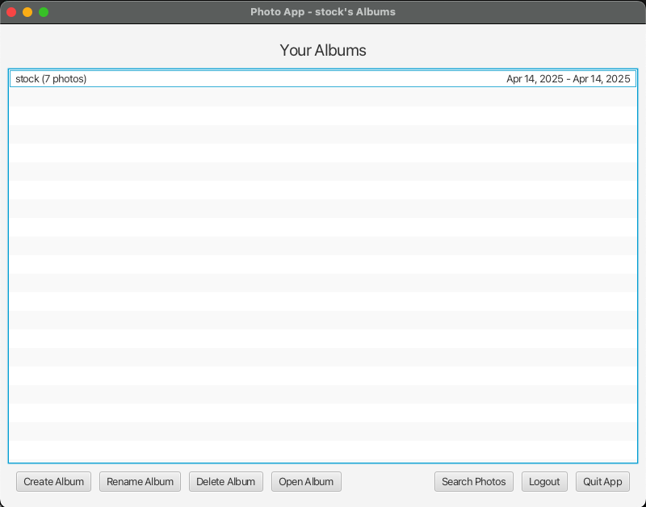
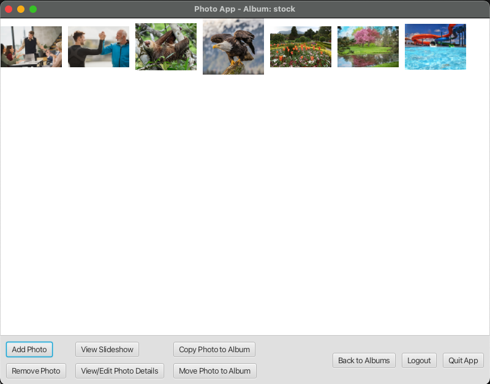
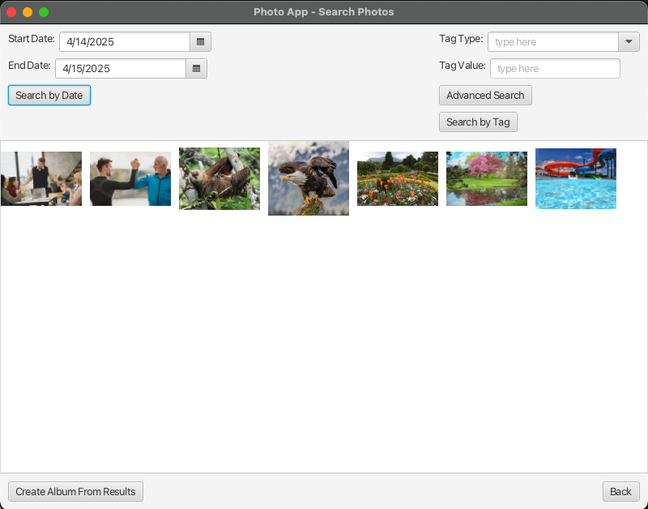
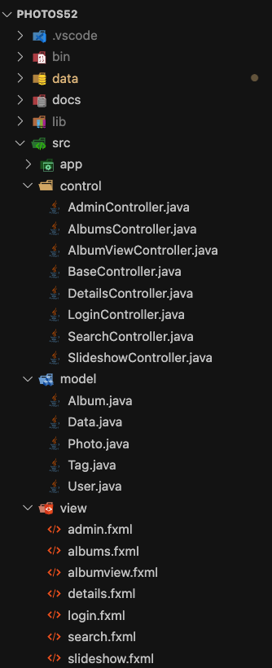

March 2025 – April 2025
Created a desktop application to manage photo collections, allowing users to organize photos into albums, tag them with metadata, and search through complex queries.
Java, JavaFX, FXML, Serialization
Users need an intuitive system to organize, tag, and retrieve photos efficiently.
Designed an MVC-structured JavaFX application with strong data models, UI control layers, and persistence through object serialization.
Port application to Android so that users can use it via a mobile application.
Code available upon request due to academic policies.
   